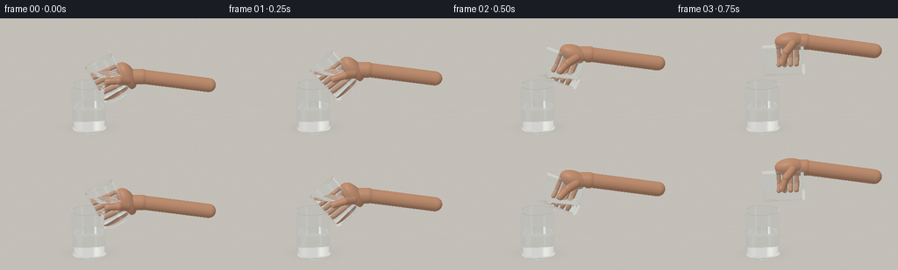
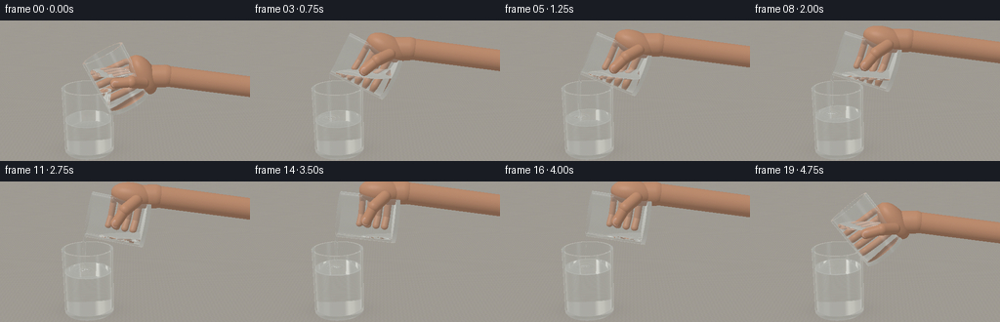
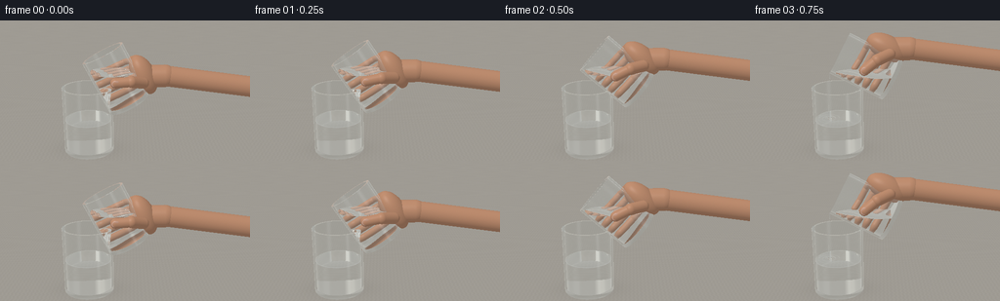
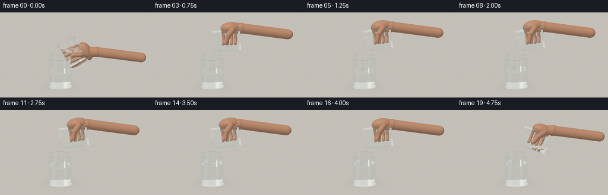
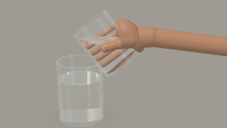

CODING AGENTS AS PIXEL WORLD MODELS
traex/GPT-6.1-Sol · phygen_138
点击播放 · 原生 RGB 像素
此结果可播放，但该运行尚未通过最终提交审核。页面展示不代表评测通过。
逐轮保存的候选
回放视频、检查图与代码变化。
每份候选均可单独播放。实际图片检查记录在下方工具轨迹中。
候选 01播放与检查图
点击播放 · 原生 RGB 像素

展开代码变化
--- 上一保存版本
+++ 本次保存版本
@@ -0,0 +1,268 @@
+import math
+from pathlib import Path
+import numpy as np
+from PIL import Image
+import artifact_io
+
+ROOT=Path(__file__).resolve().parent
+W,H=512,288
+rng=np.random.default_rng(431)
+
+def norm(v):
+ return v/np.maximum(np.linalg.norm(v,axis=-1,keepdims=True),1e-10)
+
+def environment(d):
+ # Broad studio window and a narrow vertical highlight reflected in the glass.
+ t=np.clip(d[:,2]*.65+.5,0,1)
+ col=np.array([.46,.43,.38])[None,:]*(1-t[:,None])+np.array([.77,.79,.77])[None,:]*t[:,None]
+ window=np.exp(-((d[:,0]+.48)/.26)**8-((d[:,1]+.65)/.34)**8-((d[:,2]-.39)/.40)**8)
+ strip=np.exp(-((d[:,0]-.7)/.075)**2-((d[:,2]-.25)/.65)**6)*np.clip(-d[:,1],0,1)
+ col+=window[:,None]*np.array([1.6,1.57,1.42])+strip[:,None]*np.array([1.15,1.2,1.22])
+ return col
+
+# objects use exact analytic cylinder, plane, sphere and ellipsoid intersections
+class Scene:
+ def __init__(self): self.objs=[]
+ def cylinder(self,center,R,lo,hi,rot,material,inside=False,clip=None):
+ self.objs.append(('cyl',np.array(center),R,lo,hi,rot,material,inside,clip))
+ def disc(self,center,rad,inner,axis,material,normal_sign=1):
+ self.objs.append(('disc',np.array(center),rad,inner,np.array(axis)*normal_sign,material))
+ def ellipsoid(self,center,radii,rot,material):
+ self.objs.append(('ell',np.array(center),np.array(radii),rot,material))
+ def ball(self,center,r,material): self.ellipsoid(center,[r]*3,np.eye(3),material)
+ def capsule(self,a,b,r,material):
+ a,b=np.array(a),np.array(b); ax=norm(b-a)
+ ex=norm(np.cross(ax,[0,1,0] if abs(ax[1])<.9 else [1,0,0])); ey=np.cross(ax,ex)
+ rot=np.stack([ex,ey,ax],axis=1)
+ self.cylinder(a,r,0,np.linalg.norm(b-a),rot,material)
+ self.ball(a,r,material);self.ball(b,r,material)
+ def hit(self,o,d):
+ n=len(o); best=np.full(n,np.inf); normal=np.zeros((n,3)); mat=np.zeros(n,dtype=np.int32)
+ def take(t,nor,m):
+ use=(t>0.00006)&(t<best)
+ best[use]=t[use];normal[use]=nor[use];mat[use]=m
+ # floor
+ t=(-o[:,2])/np.where(abs(d[:,2])>1e-10,d[:,2],1e-10)
+ take(t,np.broadcast_to([0,0,1.],o.shape),1)
+ for ob in self.objs:
+ kind=ob[0]
+ if kind=='cyl':
+ _,c,r,lo,hi,rot,m,inside,clip=ob
+ q=(o-c)@rot; v=d@rot
+ a=v[:,0]**2+v[:,1]**2; b=q[:,0]*v[:,0]+q[:,1]*v[:,1]; cc=q[:,0]**2+q[:,1]**2-r*r
+ det=b*b-a*cc; root=np.sqrt(np.maximum(det,0)); aa=np.maximum(a,1e-14)
+ for s in [-1,1]:
+ t=(-b+s*root)/aa
+ z=q[:,2]+t*v[:,2]
+ valid=(det>=0)&(z>=lo)&(z<=hi)
+ if clip is not None: valid &= o[:,2]+t*d[:,2]<=clip+1e-7
+ t=np.where(valid,t,np.inf)
+ p=q+np.where(np.isfinite(t),t,0)[:,None]*v
+ nr=np.stack([p[:,0]/r,p[:,1]/r,np.zeros(n)],axis=1)@rot.T
+ if inside: nr=-nr
+ take(t,nr,m)
+ elif kind=='disc':
+ _,c,r,inner,axis,m=ob
+ den=d@axis
+ t=((c-o)@axis)/np.where(abs(den)>1e-12,den,1e-12)
+ p=o+np.where(np.isfinite(t),t,0)[:,None]*d-c
+ rr=np.sum(p*p,axis=1)
+ valid=(abs(den)>1e-8)&(rr<=r*r)&(rr>=inner*inner)
+ take(np.where(valid,t,np.inf),np.broadcast_to(axis,o.shape),m)
+ elif kind=='ell':
+ _,c,r,rot,m=ob
+ q=((o-c)@rot)/r;v=(d@rot)/r
+ a=np.sum(v*v,axis=1);b=np.sum(q*v,axis=1);cc=np.sum(q*q,axis=1)-1
+ det=b*b-a*cc;rt=np.sqrt(np.maximum(det,0))
+ t=(-b-rt)/a;t=np.where(t>0.00006,t,(-b+rt)/a)
+ p=q+np.where(np.isfinite(t),t,0)[:,None]*v
+ nr=norm((p/r)@rot.T)
+ take(np.where(det>=0,t,np.inf),nr,m)
+ return best,normal,mat
+
+def cup(sc,base,rot,R,height,level):
+ # Solid, clear glass wall with a thicker polished foot.
+ base=np.array(base);axis=rot[:,2];ri=R-.035
+ sc.cylinder(base,R,0,height,rot,2)
+ sc.cylinder(base,ri,.065,height,rot,2,True)
+ sc.disc(base,R,0,axis,2,-1)
+ sc.disc(base+axis*.065,ri,0,axis,2)
+ sc.disc(base+axis*height,R,ri,axis,2)
+ # Water in glass; minuscule air gap makes the dielectric interfaces stable.
+ lr=ri-.0012
+ sc.cylinder(base,lr,.066,height-.001,rot,3,clip=level)
+ sc.disc(base+axis*.066,lr,0,axis,3,-1)
+ # A horizontal water surface clipped against the tilted vessel interior.
+ sc.objs.append(('waterplane',base,lr,.066,height-.001,rot,3,level))
+
+# Patch hit to include the gravity-horizontal liquid cap.
+_original_hit=Scene.hit
+def hit_with_caps(self,o,d):
+ t,n,m=_original_hit(self,o,d)
+ for ob in self.objs:
+ if ob[0]!='waterplane':continue
+ _,base,r,lo,hi,rot,material,level=ob
+ dt=(level-o[:,2])/np.where(abs(d[:,2])>1e-9,d[:,2],1e-9)
+ p=(o+dt[:,None]*d-base)@rot
+ ok=(dt>.00006)&(dt<t)&(p[:,0]**2+p[:,1]**2<=r*r)&(p[:,2]>=lo)&(p[:,2]<=hi)
+ t[ok]=dt[ok];n[ok]=[0,0,1];m[ok]=material
+ return t,n,m
+Scene.hit=hit_with_caps
+
+def rot_y(a):
+ c,s=np.cos(a),np.sin(a)
+ return np.array([[c,0,s],[0,1,0],[-s,0,c]])
+
+def smooth(t):
+ t=np.clip(t,0,1);return t*t*(3-2*t)
+
+EYE=np.array([.2,-6.8,3.22]);TARGET=np.array([.05,0,1.22])
+forward=norm(TARGET-EYE);right=norm(np.cross(forward,[0,0,1]));up=np.cross(right,forward)
+y,x=np.mgrid[0:H,0:W]
+xx=(x+.5-W/2)/(H/2);yy=-(y+.5-H/2)/(H/2)
+D=norm(forward+xx[...,None]*right*.216+yy[...,None]*up*.216).reshape(-1,3)
+O=np.broadcast_to(EYE,D.shape).copy()
+LIGHT=norm(np.array([-3,-4,6.]))
+
+
+def make_scene(frame):
+ t=frame/4
+ sc=Scene()
+ amount=smooth((t-.55)/3.45)
+ level=.57+.245*amount
+ cup(sc,[-.53,0,.006],np.eye(3),.43,1.13,level)
+ # The held tumbler moves left, tips smoothly, then lifts back upright.
+ tip=smooth(t/.9)
+ recovery=smooth((t-3.85)/.9)
+ angle=-(27+72*tip-29*recovery)*np.pi/180
+ rot=rot_y(angle)
+ mouth=np.array([-.49+.22*(1-tip)+.16*recovery,.0,1.72+.12*recovery])
+ ht=.96;R=.37
+ base=mouth-rot[:,2]*ht
+ # surface reaches lower lip during pouring; declines as last pour ends
+ lip=mouth+rot@np.array([-R,0,0])
+ if t<.75:
+ srclevel=base[2]+.61*np.cos(angle)
+ srclevel=min(srclevel,lip[2]-.012)
+ else:srclevel=lip[2]-.006-.07*recovery
+ cup(sc,base,rot,R,ht,srclevel)
+ # Hand gripping source; palm, thumb and folded fingers, with a cropped wrist.
+ def P(p):return base+rot@np.array(p)
+ # Rear fingers wrap across side and behind the transparent tumbler.
+ skin=4
+ palm=P([.43,.08,.31])
+ sc.ellipsoid(palm,[.20,.235,.36],rot,skin)
+ for k in range(4):
+ z=.17+k*.145
+ pts=[P([.44,.17,z]),P([.25,.33,z]),P([-.03,.35,z]),P([-.19,.27,z+.018])]
+ for a,b in zip(pts[:-1],pts[1:]):sc.capsule(a,b,.062 if k<3 else .055,skin)
+ # Thumb rests diagonally across the visible front of the glass.
+ thumb_a=P([.39,-.17,.25]);thumb_b=P([.25,-.345,.40]);thumb_c=P([.02,-.37,.50])
+ sc.capsule(thumb_a,thumb_b,.093,skin);sc.capsule(thumb_b,thumb_c,.082,skin)
+ nailpos=P([.027,-.433,.503])
+ sc.ellipsoid(nailpos,[.066,.014,.052],rot,5)
+ wrist=palm+np.array([.36,.015,-.02])
+ sc.capsule(palm+np.array([.12,.02,-.025]),wrist,.19,skin)
+ sc.capsule(wrist,wrist+np.array([1.65,.05,-.22]),.175,skin)
+ # A narrow connected ribbon of clear vinegar. It is not foamy or carbonated.
+ pouring=t>=.75 and t<4.05
+ if pouring:
+ strength=min(smooth((t-.65)/.30),1-smooth((t-3.6)/.5))
+ r=.0215*max(strength,.18)
+ start=lip+np.array([-.009,-.018,-.012])
+ end=np.array([start[0]-.038,-.018,level+.01])
+ pts=[]
+ for i in range(9):
+ u=i/8
+ pts.append(start*(1-u)+end*u+np.array([.009*np.sin(u*8+t*3)*u, .004*np.sin(u*7+t*4)*u,0]))
+ for i in range(8):sc.capsule(pts[i],pts[i+1],r*(1-.21*i/8),3)
+ # Small surface disturbance, soft and shallow.
+ for i in range(3):
+ a=t*4+i*2.1
+ c=end+np.array([.035*np.cos(a),.024*np.sin(a),.006])
+ sc.ellipsoid(c,[.032,.023,.012],np.eye(3),3)
+ return sc,level,pouring,lip
+
+
+def render(frame):
+ sc,level,pouring,lip=make_scene(frame)
+ o=O.copy();d=D.copy(); throughput=np.ones((len(d),3)); result=np.zeros_like(d)
+ active=np.arange(len(d));medium=np.ones(len(d))
+ for bounce in range(12):
+ if len(active)==0:break
+ t,n,m=sc.hit(o,d)
+ miss=~np.isfinite(t)
+ if np.any(miss):
+ # neutral linen-colored backdrop, with delicate lighting gradient
+ dd=d[miss]; col=np.stack([.69+.065*dd[:,2],.671+.067*dd[:,2],.628+.074*dd[:,2]],axis=1)
+ result[active[miss]]+=throughput[miss]*col
+ opaque=np.isin(m,[1,4,5])&~miss
+ if np.any(opaque):
+ p=o[opaque]+d[opaque]*t[opaque,None];nn=n[opaque];mm=m[opaque]
+ shade=np.clip(nn@LIGHT,0,1)
+ basecol=np.broadcast_to([.64,.60,.53],p.shape).copy()
+ floor=mm==1
+ if np.any(floor):
+ pp=p[floor]
+ # Extremely subtle stone grain, not distracting wood stripes.
+ tex=.008*np.sin(pp[:,0]*93+np.sin(pp[:,1]*52))+.004*np.sin(pp[:,1]*187)
+ basecol[floor]=np.array([.66,.635,.585])+tex[:,None]
+ # Wide soft glass shadow and contact shadows anchor the vessel.
+ sh=np.exp(-((pp[:,0]+.50)/.52)**2-(pp[:,1]/.34)**2)*.20
+ sh+=np.exp(-((pp[:,0]+.53)/.37)**2-(pp[:,1]/.20)**2)*.16
+ shade[floor]*=1-sh
+ # Weak refracted illumination close to the bottom edge.
+ ring=np.exp(-((np.sqrt((pp[:,0]+.53)**2+(pp[:,1]-.065)**2)-.40)/.05)**2)*.035
+ basecol[floor]+=ring[:,None]
+ skin=mm==4
+ if np.any(skin):
+ basecol[skin]=[.57,.305,.186]
+ # subtle warm skin tonal variations and small pores
+ noise=.006*np.sin(p[skin,0]*240)*np.sin(p[skin,2]*211)
+ basecol[skin]+=noise[:,None]
+ basecol[mm==5]=[.65,.396,.296]
+ col=basecol*(.42+.58*shade[:,None])
+ view=norm(-d[opaque]);half=norm(LIGHT+view)
+ spec=np.maximum(np.sum(nn*half,axis=1),0)**(45)
+ col+=spec[:,None]*np.where((mm==5)[:,None],.15,.06)
+ result[active[opaque]]+=throughput[opaque]*col
+ keep=~miss&~opaque
+ if not np.any(keep):break
+ active=active[keep];o=o[keep];d=d[keep];t=t[keep];n=n[keep];m=m[keep];throughput=throughput[keep];medium=medium[keep]
+ point=o+t[:,None]*d
+ entering=np.sum(d*n,axis=1)<0
+ ior=np.where(m==2,1.50,1.333)
+ n2=np.where(entering,ior,1.)
+ # shared glass-liquid boundaries are handled as separate thin interfaces.
+ eta=medium/n2
+ nn=np.where(entering[:,None],n,-n)
+ cos=np.clip(-np.sum(d*nn,axis=1),0,1)
+ fres=((medium-n2)/(medium+n2))**2
+ fres=fres+(1-fres)*(1-cos)**5
+ k=1-eta**2*(1-cos**2)
+ tir=k<0
+ refl=norm(d+2*cos[:,None]*nn)
+ env=environment(refl)
+ # absorb very lightly in glass; water is visually clear.
+ absorption=np.where((medium>1.4)[:,None],np.array([.028,.015,.012]),np.array([.006,.002,.001]))
+ throughput*=np.exp(-absorption*t[:,None])
+ result[active]+=throughput*(fres*np.logical_not(tir))[:,None]*env
+ refr=norm(eta[:,None]*d+(eta*cos-np.sqrt(np.maximum(k,0)))[:,None]*nn)
+ d=np.where(tir[:,None],refl,refr)
+ throughput*=np.where(tir,1,1-fres)[:,None]
+ medium=np.where(tir,medium,n2)
+ o=point+d*.00013
+ if len(active):result[active]+=throughput*environment(d)
+ im=result.reshape(H,W,3)
+ # Gentle exposure, film-like gamma and tiny stable sensor grain.
+ im=np.clip(im,0,1)**(1/2.1)
+ grain=np.random.default_rng(123).normal(0,.0014,(H,W,1))
+ im=np.uint8(np.clip(im+grain,0,1)*255)
+ return np.asarray(Image.fromarray(im).resize((256,144),Image.Resampling.LANCZOS))
+
+if __name__=='__main__':
+ frames=[]
+ for i in range(20):
+ print('Rendering',i,flush=True)
+ frames.append(render(i))
+ artifact_io.save(np.stack(frames),ROOT)
候选 02播放与检查图
点击播放 · 原生 RGB 像素


展开代码变化
--- 上一保存版本
+++ 本次保存版本
@@ -1,7 +1,7 @@
import math
from pathlib import Path
import numpy as np
-from PIL import Image
+from PIL import Image, ImageDraw
import artifact_io
ROOT=Path(__file__).resolve().parent
@@ -116,11 +116,11 @@
def smooth(t):
t=np.clip(t,0,1);return t*t*(3-2*t)
-EYE=np.array([.2,-6.8,3.22]);TARGET=np.array([.05,0,1.22])
+EYE=np.array([.2,-5.5,2.85]);TARGET=np.array([.10,0,1.08])
forward=norm(TARGET-EYE);right=norm(np.cross(forward,[0,0,1]));up=np.cross(right,forward)
y,x=np.mgrid[0:H,0:W]
xx=(x+.5-W/2)/(H/2);yy=-(y+.5-H/2)/(H/2)
-D=norm(forward+xx[...,None]*right*.216+yy[...,None]*up*.216).reshape(-1,3)
+D=norm(forward+xx[...,None]*right*.205+yy[...,None]*up*.205).reshape(-1,3)
O=np.broadcast_to(EYE,D.shape).copy()
LIGHT=norm(np.array([-3,-4,6.]))
@@ -134,7 +134,7 @@
# The held tumbler moves left, tips smoothly, then lifts back upright.
tip=smooth(t/.9)
recovery=smooth((t-3.85)/.9)
- angle=-(27+72*tip-29*recovery)*np.pi/180
+ angle=-(27+38*tip-27*recovery)*np.pi/180
rot=rot_y(angle)
mouth=np.array([-.49+.22*(1-tip)+.16*recovery,.0,1.72+.12*recovery])
ht=.96;R=.37
@@ -168,7 +168,7 @@
pouring=t>=.75 and t<4.05
if pouring:
strength=min(smooth((t-.65)/.30),1-smooth((t-3.6)/.5))
- r=.0215*max(strength,.18)
+ r=.026*max(strength,.18)
start=lip+np.array([-.009,-.018,-.012])
end=np.array([start[0]-.038,-.018,level+.01])
pts=[]
@@ -194,7 +194,7 @@
miss=~np.isfinite(t)
if np.any(miss):
# neutral linen-colored backdrop, with delicate lighting gradient
- dd=d[miss]; col=np.stack([.69+.065*dd[:,2],.671+.067*dd[:,2],.628+.074*dd[:,2]],axis=1)
+ dd=d[miss]; col=np.stack([.365+.10*dd[:,2],.347+.10*dd[:,2],.313+.10*dd[:,2]],axis=1)
result[active[miss]]+=throughput[miss]*col
opaque=np.isin(m,[1,4,5])&~miss
if np.any(opaque):
@@ -206,7 +206,7 @@
pp=p[floor]
# Extremely subtle stone grain, not distracting wood stripes.
tex=.008*np.sin(pp[:,0]*93+np.sin(pp[:,1]*52))+.004*np.sin(pp[:,1]*187)
- basecol[floor]=np.array([.66,.635,.585])+tex[:,None]
+ basecol[floor]=np.array([.43,.408,.367])+tex[:,None]
# Wide soft glass shadow and contact shadows anchor the vessel.
sh=np.exp(-((pp[:,0]+.50)/.52)**2-(pp[:,1]/.34)**2)*.20
sh+=np.exp(-((pp[:,0]+.53)/.37)**2-(pp[:,1]/.20)**2)*.16
@@ -258,6 +258,32 @@
im=np.clip(im,0,1)**(1/2.1)
grain=np.random.default_rng(123).normal(0,.0014,(H,W,1))
im=np.uint8(np.clip(im+grain,0,1)*255)
+ # Thin meniscus and moving wavefronts make the transparent water surface legible.
+ image=Image.fromarray(im).convert('RGBA')
+ overlay=Image.new('RGBA',(W,H));draw=ImageDraw.Draw(overlay)
+ def project(p):
+ q=np.asarray(p)-EYE
+ depth=q@forward
+ return np.stack([W/2+(q@right)/depth*(H/2)/.205,H/2-(q@up)/depth*(H/2)/.205],axis=-1)
+ def arc(center,r,start,stop,color,width=1):
+ a=np.linspace(start,stop,80)
+ pts=np.array(center)+np.stack([r*np.cos(a),r*np.sin(a),np.zeros(len(a))],axis=1)
+ uv=project(pts)
+ draw.line([tuple(v) for v in uv],fill=color,width=width)
+ arc([-.53,0,level],.391,0,math.pi,(223,231,226,66),1)
+ arc([-.53,0,level],.391,math.pi,2*math.pi,(231,235,230,40),1)
+ if frame>=3:
+ time=frame/4
+ impact=np.array([lip[0]-.047,-.018,level+.001])
+ for j in range(3):
+ phase=(time*1.30-j*.30)%1.0
+ radius=.027+.23*phase
+ if np.linalg.norm(impact[:2]-[-.53,0])+radius<.38:
+ opacity=int(62*(1-phase)*(1 if pouring else .4))
+ arc(impact,radius,.18,math.pi-.22,(231,239,235,opacity),1)
+ arc(impact,radius,math.pi+.24,2*math.pi-.35,(214,226,224,int(opacity*.65)),1)
+ image=Image.alpha_composite(image,overlay).convert('RGB')
+ im=np.asarray(image)
return np.asarray(Image.fromarray(im).resize((256,144),Image.Resampling.LANCZOS))
if __name__=='__main__':
候选 03播放与检查图
候选 04播放与检查图
点击播放 · 原生 RGB 像素


展开代码变化
--- 上一保存版本
+++ 本次保存版本
@@ -134,7 +134,7 @@
# The held tumbler moves left, tips smoothly, then lifts back upright.
tip=smooth(t/.9)
recovery=smooth((t-3.85)/.9)
- angle=-(27+38*tip-27*recovery)*np.pi/180
+ angle=-(27+38*tip+20*amount*(1-recovery)-27*recovery)*np.pi/180
rot=rot_y(angle)
mouth=np.array([-.49+.22*(1-tip)+.16*recovery,.0,1.72+.12*recovery])
ht=.96;R=.37
@@ -175,7 +175,10 @@
for i in range(9):
u=i/8
pts.append(start*(1-u)+end*u+np.array([.009*np.sin(u*8+t*3)*u, .004*np.sin(u*7+t*4)*u,0]))
- for i in range(8):sc.capsule(pts[i],pts[i+1],r*(1-.21*i/8),3)
+ ax=norm(end-start)
+ ex=norm(np.cross(ax,[0,1,0]));ey=np.cross(ax,ex)
+ streamrot=np.stack([ex,ey,ax],axis=1)
+ sc.cylinder(start,r,0,np.linalg.norm(end-start),streamrot,3)
# Small surface disturbance, soft and shallow.
for i in range(3):
a=t*4+i*2.1
可观测工具轨迹
实际执行的命令与返回图片。
命令 1exit 0
/bin/bash -lc "ls -la && cat prompt.txt && printf '\\n---RULES---\\n' && cat GENERATION_RULES.md && printf '\\n---SPEC---\\n' && cat task_spec.json"
命令 2exit 0
/bin/bash -lc "cat artifact_io.py && python - <<'PY'
import numpy,PIL
print('numpy/PIL available')
PY"命令 3exit 0
/bin/bash -lc "cat > generate.py <<'PY'
import math
from pathlib import Path
import numpy as np
from PIL import Image
import artifact_io
ROOT=Path(__file__).resolve().parent
W,H=512,288
rng=np.random.default_rng(431)
def norm(v):
return v/np.maximum(np.linalg.norm(v,axis=-1,keepdims=True),1e-10)
def environment(d):
# Broad studio window and a narrow vertical highlight reflected in the glass.
t=np.clip(d[:,2]*.65+.5,0,1)
col=np.array([.46,.43,.38])[None,:]*(1-t[:,None])+np.array([.77,.79,.77])[None,:]*t[:,None]
window=np.exp(-((d[:,0]+.48)/.26)**8-((d[:,1]+.65)/.34)**8-((d[:,2]-.39)/.40)**8)
strip=np.exp(-((d[:,0]-.7)/.075)**2-((d[:,2]-.25)/.65)**6)*np.clip(-d[:,1],0,1)
col+=window[:,None]*np.array([1.6,1.57,1.42])+strip[:,None]*np.array([1.15,1.2,1.22])
return col
# objects use exact analytic cylinder, plane, sphere and ellipsoid intersections
class Scene:
def __init__(self): self.objs=[]
def cylinder(self,center,R,lo,hi,rot,material,inside=False,clip=None):
self.objs.append(('cyl',np.array(center),R,lo,hi,rot,material,inside,clip))
def disc(self,center,rad,inner,axis,material,normal_sign=1):
self.objs.append(('disc',np.array(center),rad,inner,np.array(axis)*normal_sign,material))
def ellipsoid(self,center,radii,rot,material):
self.objs.append(('ell',np.array(center),np.array(radii),rot,material))
def ball(self,center,r,material): self.ellipsoid(center,[r]*3,np.eye(3),material)
def capsule(self,a,b,r,material):
a,b=np.array(a),np.array(b); ax=norm(b-a)
ex=norm(np.cross(ax,[0,1,0] if abs(ax[1])<.9 else [1,0,0])); ey=np.cross(ax,ex)
rot=np.stack([ex,ey,ax],axis=1)
self.cylinder(a,r,0,np.linalg.norm(b-a),rot,material)
self.ball(a,r,material);self.ball(b,r,material)
def hit(self,o,d):
n=len(o); best=np.full(n,np.inf); normal=np.zeros((n,3)); mat=np.zeros(n,dtype=np.int32)
def take(t,nor,m):
use=(t>0.00006)&(t<best)
best[use]=t[use];normal[use]=nor[use];mat[use]=m
# floor
t=(-o[:,2])/np.where(abs(d[:,2])>1e-10,d[:,2],1e-10)
take(t,np.broadcast_to([0,0,1.],o.shape),1)
for ob in self.objs:
kind=ob[0]
if kind=='cyl':
_,c,r,lo,hi,rot,m,inside,clip=ob
q=(o-c)@rot; v=d@rot
a=v[:,0]**2+v[:,1]**2; b=q[:,0]*v[:,0]+q[:,1]*v[:,1]; cc=q[:,0]**2+q[:,1]**2-r*r
det=b*b-a*cc; root=np.sqrt(np.maximum(det,0)); aa=np.maximum(a,1e-14)
for s in [-1,1]:
t=(-b+s*root)/aa
z=q[:,2]+t*v[:,2]
valid=(det>=0)&(z>=lo)&(z<=hi)
if clip is not None: valid &= o[:,2]+t*d[:,2]<=clip+1e-7
t=np.where(valid,t,np.inf)
p=q+np.where(np.isfinite(t),t,0)[:,None]*v
nr=np.stack([p[:,0]/r,p[:,1]/r,np.zeros(n)],axis=1)@rot.T
if inside: nr=-nr
take(t,nr,m)
elif kind=='disc':
_,c,r,inner,axis,m=ob
den=d@axis
t=((c-o)@axis)/np.where(abs(den)>1e-12,den,1e-12)
p=o+np.where(np.isfinite(t),t,0)[:,None]*d-c
rr=np.sum(p*p,axis=1)
valid=(abs(den)>1e-8)&(rr<=r*r)&(rr>=inner*inner)
take(np.where(valid,t,np.inf),np.broadcast_to(axis,o.shape),m)
elif kind=='ell':
_,c,r,rot,m=ob
q=((o-c)@rot)/r;v=(d@rot)/r
a=np.sum(v*v,axis=1);b=np.sum(q*v,axis=1);cc=np.sum(q*q,axis=1)-1
det=b*b-a*cc;rt=np.sqrt(np.maximum(det,0))
t=(-b-rt)/a;t=np.where(t>0.00006,t,(-b+rt)/a)
p=q+np.where(np.isfinite(t),t,0)[:,None]*v
nr=norm((p/r)@rot.T)
take(np.where(det>=0,t,np.inf),nr,m)
return best,normal,mat
def cup(sc,base,rot,R,height,level):
# Solid, clear glass wall with a thicker polished foot.
base=np.array(base);axis=rot[:,2];ri=R-.035
sc.cylinder(base,R,0,height,rot,2)
sc.cylinder(base,ri,.065,height,rot,2,True)
sc.disc(base,R,0,axis,2,-1)
sc.disc(base+axis*.065,ri,0,axis,2)
sc.disc(base+axis*height,R,ri,axis,2)
# Water in glass; minuscule air gap makes the dielectric interfaces stable.
lr=ri-.0012
sc.cylinder(base,lr,.066,height-.001,rot,3,clip=level)
sc.disc(base+axis*.066,lr,0,axis,3,-1)
# A horizontal water surface clipped against the tilted vessel interior.
sc.objs.append(('waterplane',base,lr,.066,height-.001,rot,3,level))
# Patch hit to include the gravity-horizontal liquid cap.
_original_hit=Scene.hit
def hit_with_caps(self,o,d):
t,n,m=_original_hit(self,o,d)
for ob in self.objs:
if ob[0]"'!='"'waterplane':continue
_,base,r,lo,hi,rot,material,level=ob
dt=(level-o[:,2])/np.where(abs(d[:,2])>1e-9,d[:,2],1e-9)
p=(o+dt[:,None]*d-base)@rot
ok=(dt>.00006)&(dt<t)&(p[:,0]**2+p[:,1]**2<=r*r)&(p[:,2]>=lo)&(p[:,2]<=hi)
t[ok]=dt[ok];n[ok]=[0,0,1];m[ok]=material
return t,n,m
Scene.hit=hit_with_caps
def rot_y(a):
c,s=np.cos(a),np.sin(a)
return np.array([[c,0,s],[0,1,0],[-s,0,c]])
def smooth(t):
t=np.clip(t,0,1);return t*t*(3-2*t)
EYE=np.array([.2,-6.8,3.22]);TARGET=np.array([.05,0,1.22])
forward=norm(TARGET-EYE);right=norm(np.cross(forward,[0,0,1]));up=np.cross(right,forward)
y,x=np.mgrid[0:H,0:W]
xx=(x+.5-W/2)/(H/2);yy=-(y+.5-H/2)/(H/2)
D=norm(forward+xx[...,None]*right*.216+yy[...,None]*up*.216).reshape(-1,3)
O=np.broadcast_to(EYE,D.shape).copy()
LIGHT=norm(np.array([-3,-4,6.]))
def make_scene(frame):
t=frame/4
sc=Scene()
amount=smooth((t-.55)/3.45)
level=.57+.245*amount
cup(sc,[-.53,0,.006],np.eye(3),.43,1.13,level)
# The held tumbler moves left, tips smoothly, then lifts back upright.
tip=smooth(t/.9)
recovery=smooth((t-3.85)/.9)
angle=-(27+72*tip-29*recovery)*np.pi/180
rot=rot_y(angle)
mouth=np.array([-.49+.22*(1-tip)+.16*recovery,.0,1.72+.12*recovery])
ht=.96;R=.37
base=mouth-rot[:,2]*ht
# surface reaches lower lip during pouring; declines as last pour ends
lip=mouth+rot@np.array([-R,0,0])
if t<.75:
srclevel=base[2]+.61*np.cos(angle)
srclevel=min(srclevel,lip[2]-.012)
else:srclevel=lip[2]-.006-.07*recovery
cup(sc,base,rot,R,ht,srclevel)
# Hand gripping source; palm, thumb and folded fingers, with a cropped wrist.
def P(p):return base+rot@np.array(p)
# Rear fingers wrap across side and behind the transparent tumbler.
skin=4
palm=P([.43,.08,.31])
sc.ellipsoid(palm,[.20,.235,.36],rot,skin)
for k in range(4):
z=.17+k*.145
pts=[P([.44,.17,z]),P([.25,.33,z]),P([-.03,.35,z]),P([-.19,.27,z+.018])]
for a,b in zip(pts[:-1],pts[1:]):sc.capsule(a,b,.062 if k<3 else .055,skin)
# Thumb rests diagonally across the visible front of the glass.
thumb_a=P([.39,-.17,.25]);thumb_b=P([.25,-.345,.40]);thumb_c=P([.02,-.37,.50])
sc.capsule(thumb_a,thumb_b,.093,skin);sc.capsule(thumb_b,thumb_c,.082,skin)
nailpos=P([.027,-.433,.503])
sc.ellipsoid(nailpos,[.066,.014,.052],rot,5)
wrist=palm+np.array([.36,.015,-.02])
sc.capsule(palm+np.array([.12,.02,-.025]),wrist,.19,skin)
sc.capsule(wrist,wrist+np.array([1.65,.05,-.22]),.175,skin)
# A narrow connected ribbon of clear vinegar. It is not foamy or carbonated.
pouring=t>=.75 and t<4.05
if pouring:
strength=min(smooth((t-.65)/.30),1-smooth((t-3.6)/.5))
r=.0215*max(strength,.18)
start=lip+np.array([-.009,-.018,-.012])
end=np.array([start[0]-.038,-.018,level+.01])
pts=[]
for i in range(9):
u=i/8
pts.append(start*(1-u)+end*u+np.array([.009*np.sin(u*8+t*3)*u, .004*np.sin(u*7+t*4)*u,0]))
for i in range(8):sc.capsule(pts[i],pts[i+1],r*(1-.21*i/8),3)
# Small surface disturbance, soft and shallow.
for i in range(3):
a=t*4+i*2.1
c=end+np.array([.035*np.cos(a),.024*np.sin(a),.006])
sc.ellipsoid(c,[.032,.023,.012],np.eye(3),3)
return sc,level,pouring,lip
def render(frame):
sc,level,pouring,lip=make_scene(frame)
o=O.copy();d=D.copy(); throughput=np.ones((len(d),3)); result=np.zeros_like(d)
active=np.arange(len(d));medium=np.ones(len(d))
for bounce in range(12):
if len(active)==0:break
t,n,m=sc.hit(o,d)
miss=~np.isfinite(t)
if np.any(miss):
# neutral linen-colored backdrop, with delicate lighting gradient
dd=d[miss]; col=np.stack([.69+.065*dd[:,2],.671+.067*dd[:,2],.628+.074*dd[:,2]],axis=1)
result[active[miss]]+=throughput[miss]*col
opaque=np.isin(m,[1,4,5])&~miss
if np.any(opaque):
p=o[opaque]+d[opaque]*t[opaque,None];nn=n[opaque];mm=m[opaque]
shade=np.clip(nn@LIGHT,0,1)
basecol=np.broadcast_to([.64,.60,.53],p.shape).copy()
floor=mm==1
if np.any(floor):
pp=p[floor]
# Extremely subtle stone grain, not distracting wood stripes.
tex=.008*np.sin(pp[:,0]*93+np.sin(pp[:,1]*52))+.004*np.sin(pp[:,1]*187)
basecol[floor]=np.array([.66,.635,.585])+tex[:,None]
# Wide soft glass shadow and contact shadows anchor the vessel.
sh=np.exp(-((pp[:,0]+.50)/.52)**2-(pp[:,1]/.34)**2)*.20
sh+=np.exp(-((pp[:,0]+.53)/.37)**2-(pp[:,1]/.20)**2)*.16
shade[floor]*=1-sh
# Weak refracted illumination close to the bottom edge.
ring=np.exp(-((np.sqrt((pp[:,0]+.53)**2+(pp[:,1]-.065)**2)-.40)/.05)**2)*.035
basecol[floor]+=ring[:,None]
skin=mm==4
if np.any(skin):
basecol[skin]=[.57,.305,.186]
# subtle warm skin tonal variations and small pores
noise=.006*np.sin(p[skin,0]*240)*np.sin(p[skin,2]*211)
basecol[skin]+=noise[:,None]
basecol[mm==5]=[.65,.396,.296]
col=basecol*(.42+.58*shade[:,None])
view=norm(-d[opaque]);half=norm(LIGHT+view)
spec=np.maximum(np.sum(nn*half,axis=1),0)**(45)
col+=spec[:,None]*np.where((mm==5)[:,None],.15,.06)
result[active[opaque]]+=throughput[opaque]*col
keep=~miss&~opaque
if not np.any(keep):break
active=active[keep];o=o[keep];d=d[keep];t=t[keep];n=n[keep];m=m[keep];throughput=throughput[keep];medium=medium[keep]
point=o+t[:,None]*d
entering=np.sum(d*n,axis=1)<0
ior=np.where(m==2,1.50,1.333)
n2=np.where(entering,ior,1.)
# shared glass-liquid boundaries are handled as separate thin interfaces.
eta=medium/n2
nn=np.where(entering[:,None],n,-n)
cos=np.clip(-np.sum(d*nn,axis=1),0,1)
fres=((medium-n2)/(medium+n2))**2
fres=fres+(1-fres)*(1-cos)**5
k=1-eta**2*(1-cos**2)
tir=k<0
refl=norm(d+2*cos[:,None]*nn)
env=environment(refl)
# absorb very lightly in glass; water is visually clear.
absorption=np.where((medium>1.4)[:,None],np.array([.028,.015,.012]),np.array([.006,.002,.001]))
throughput*=np.exp(-absorption*t[:,None])
result[active]+=throughput*(fres*np.logical_not(tir))[:,None]*env
refr=norm(eta[:,None]*d+(eta*cos-np.sqrt(np.maximum(k,0)))[:,None]*nn)
d=np.where(tir[:,None],refl,refr)
throughput*=np.where(tir,1,1-fres)[:,None]
medium=np.where(tir,medium,n2)
o=point+d*.00013
if len(active):result[active]+=throughput*environment(d)
im=result.reshape(H,W,3)
# Gentle exposure, film-like gamma and tiny stable sensor grain.
im=np.clip(im,0,1)**(1/2.1)
grain=np.random.default_rng(123).normal(0,.0014,(H,W,1))
im=np.uint8(np.clip(im+grain,0,1)*255)
return np.asarray(Image.fromarray(im).resize((256,144),Image.Resampling.LANCZOS))
if __name__=='__main__':
frames=[]
for i in range(20):
print('Rendering',i,flush=True)
frames.append(render(i))
artifact_io.save(np.stack(frames),ROOT)
PY
OPENBLAS_NUM_THREADS=1 python generate.py"命令 4exit 0
/bin/bash -lc "python - <<'PY'
p='generate.py'
s=open(p).read().replace('from PIL import Image','from PIL import Image, ImageDraw')
s=s.replace('EYE=np.array([.2,-6.8,3.22]);TARGET=np.array([.05,0,1.22])','EYE=np.array([.2,-5.5,2.85]);TARGET=np.array([.10,0,1.08])')
s=s.replace('right*.216+yy[...,None]*up*.216','right*.205+yy[...,None]*up*.205')
s=s.replace('angle=-(27+72*tip-29*recovery)','angle=-(27+38*tip-27*recovery)')
s=s.replace(\"col=np.stack([.69+.065*dd[:,2],.671+.067*dd[:,2],.628+.074*dd[:,2]],axis=1)\",\"col=np.stack([.365+.10*dd[:,2],.347+.10*dd[:,2],.313+.10*dd[:,2]],axis=1)\")
s=s.replace(\"np.array([.66,.635,.585])+tex[:,None]\",\"np.array([.43,.408,.367])+tex[:,None]\")
s=s.replace(\"r=.0215*max(strength,.18)\",\"r=.026*max(strength,.18)\")
s=s.replace(\"im=np.uint8(np.clip(im+grain,0,1)*255)\\n return\",'''im=np.uint8(np.clip(im+grain,0,1)*255)
# Thin meniscus and moving wavefronts make the transparent water surface legible.
image=Image.fromarray(im).convert('RGBA')
overlay=Image.new('RGBA',(W,H));draw=ImageDraw.Draw(overlay)
def project(p):
q=np.asarray(p)-EYE
depth=q@forward
return np.stack([W/2+(q@right)/depth*(H/2)/.205,H/2-(q@up)/depth*(H/2)/.205],axis=-1)
def arc(center,r,start,stop,color,width=1):
a=np.linspace(start,stop,80)
pts=np.array(center)+np.stack([r*np.cos(a),r*np.sin(a),np.zeros(len(a))],axis=1)
uv=project(pts)
draw.line([tuple(v) for v in uv],fill=color,width=width)
arc([-.53,0,level],.391,0,math.pi,(223,231,226,66),1)
arc([-.53,0,level],.391,math.pi,2*math.pi,(231,235,230,40),1)
if frame>=3:
time=frame/4
impact=np.array([lip[0]-.047,-.018,level+.001])
for j in range(3):
phase=(time*1.30-j*.30)%1.0
radius=.027+.23*phase
if np.linalg.norm(impact[:2]-[-.53,0])+radius<.38:
opacity=int(62*(1-phase)*(1 if pouring else .4))
arc(impact,radius,.18,math.pi-.22,(231,239,235,opacity),1)
arc(impact,radius,math.pi+.24,2*math.pi-.35,(214,226,224,int(opacity*.65)),1)
image=Image.alpha_composite(image,overlay).convert('RGB')
im=np.asarray(image)
return''')
open(p,'w').write(s)
PY
OPENBLAS_NUM_THREADS=1 python generate.py"命令 5exit 0
/bin/bash -lc 'command -v ffmpeg || true'
命令 6exit 0
/bin/bash -lc "python - <<'PY'
p='generate.py';s=open(p).read();s=s.replace('angle=-(27+38*tip-27*recovery)','angle=-(27+38*tip+20*amount*(1-recovery)-27*recovery)');s=s.replace(\"for i in range(8):sc.capsule(pts[i],pts[i+1],r*(1-.21*i/8),3)\",\"ax=norm(end-start)\\n ex=norm(np.cross(ax,[0,1,0]));ey=np.cross(ax,ex)\\n streamrot=np.stack([ex,ey,ax],axis=1)\\n sc.cylinder(start,r,0,np.linalg.norm(end-start),streamrot,3)\")
open(p,'w').write(s)
PY
OPENBLAS_NUM_THREADS=1 python generate.py"命令 7exit 0
/bin/bash -lc "python - <<'PY'
import numpy as np
from pathlib import Path
p=Path('.')
a=np.load(p/'pixels.npz')['pixels']
assert a.shape==(144,256,20)
assert len(list((p/'frames').glob('*.png')))==20
assert (p/'index.html').exists()
print('Verified 20 frames, 256Ã144, 4 fps; player and RGB tensor saved.')
PY"视觉工具实际返回图片 1

视觉工具实际返回图片 2

视觉工具实际返回图片 3

保存候选 4 份；完成命令 7 次；可验证图片返回 3 张。原始 API 响应与完整日志保留在本地。